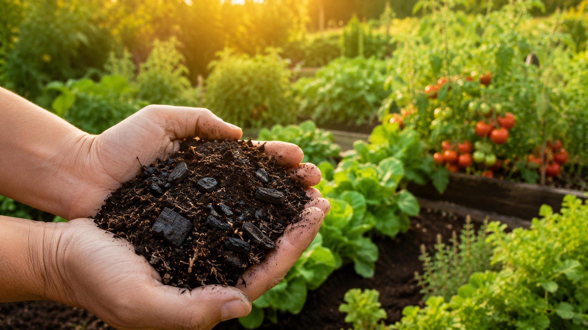
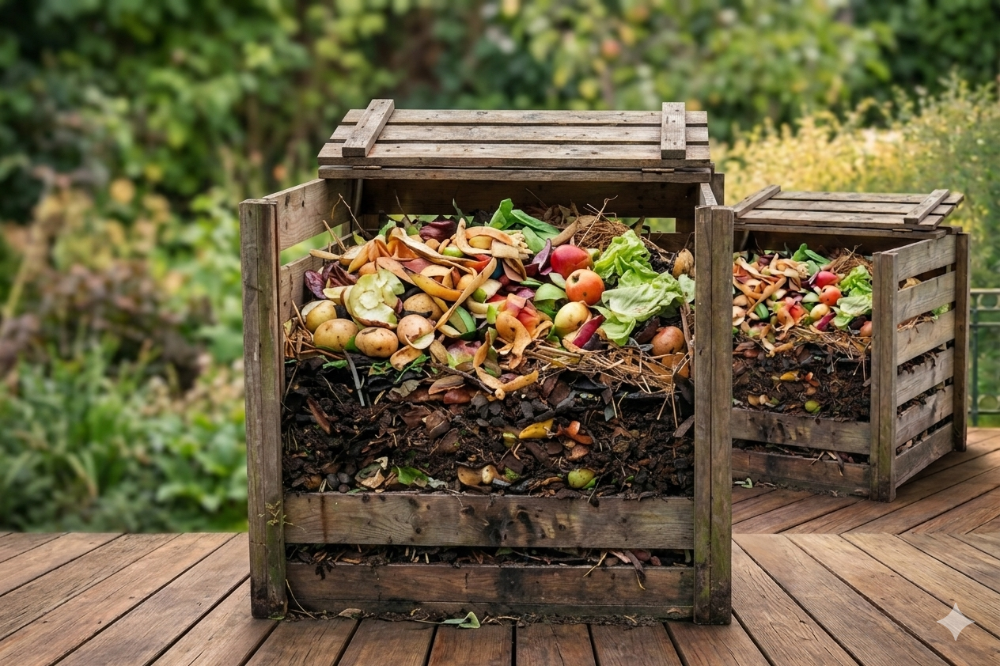
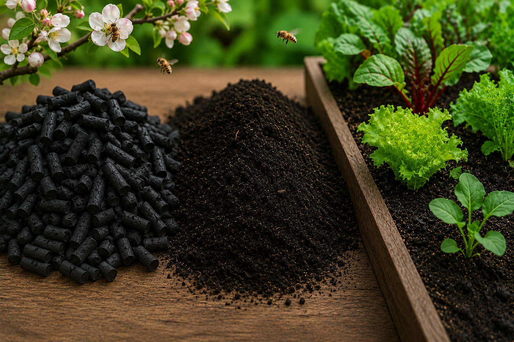
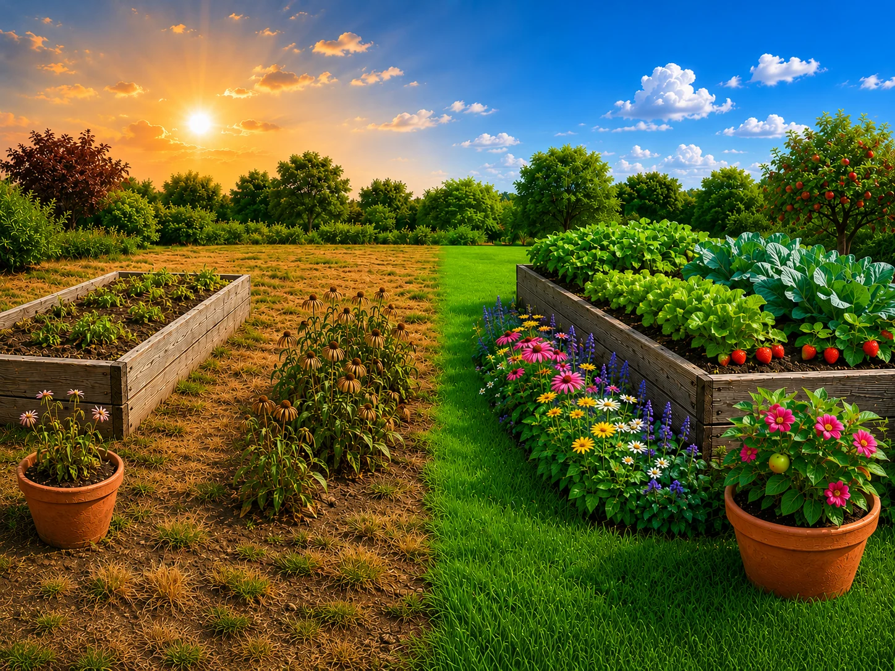
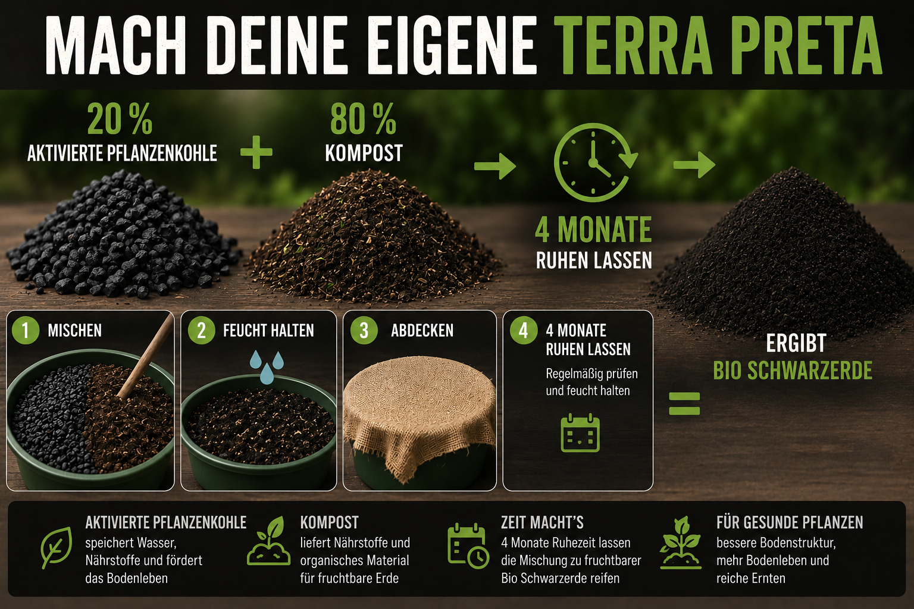

Die fruchtbarste Erde der Welt
Terra Preta ist nachweislich der fruchtbarste Boden, den es gibt – stabil, dauerhaft, voller Leben. Mit aktivierter Pflanzenkohle baust du diese Qualität selbst auf.
// Selbst machen
Aus einem Konzentrat unserer aktivierten Pflanzenkohle und deinem Kompost wird eine fruchtbare Schwarzerde – nach dem Vorbild der Terra Preta. Mit zwei Zutaten und etwas Geduld.
Terra Preta ist nachweislich der fruchtbarste Boden, den es gibt – stabil, dauerhaft, voller Leben. Mit aktivierter Pflanzenkohle baust du diese Qualität selbst auf.
Du nutzt, was ohnehin anfällt: Kompost, Grünschnitt oder organische Reststoffe. Daraus entsteht ein Endprodukt, das Wasser hält und Nährstoffe dauerhaft speichert.
Die aktivierte Pflanzenkohle bildet ein stabiles Kohlenstoffgerüst. Einmal eingearbeitet, bleibt die Wirkung über Jahre – nachdüngen wird seltener nötig.
// Anleitung

Du erhältst von uns das Carbon4Future Konzentrat – eine bereits aktivierte, mit Mikroorganismen aufgeladene Pflanzenkohle. Sie bildet das stabile Kohlenstoffgerüst deiner Schwarzerde: hält Wasser und Nährstoffe dauerhaft.

Reifer Kompost, Grünschnitt-Häcksel oder andere organische Reststoffe – sie bringen die Nährstoffe, Mikroorganismen und Humusbildner in die Mischung.

Mischen, anfeuchten, abdecken. Die Mikroorganismen besiedeln das Kohlenstoffgerüst und reichern es mit Nährstoffen an. Nach rund vier Monaten ist deine Schwarzerde einsatzbereit.

Als Substrat für Beete, Töpfe, Bäume oder zur Bodenverbesserung – mit langfristiger Wirkung. Einmal eingearbeitet, profitiert dein Boden über Jahre.
// Auf einen Blick

// Hintergrund
Die Idee stammt aus dem Amazonas: Indigene Völker schufen vor Jahrtausenden mit Holzkohle und organischen Resten die fruchtbarsten Böden der Welt – die Terra Preta („schwarze Erde"). Mit aktivierter Pflanzenkohle bringen wir dieses Prinzip in zertifizierter, regionaler Qualität in jeden Garten und auf jede Fläche.
Wir beraten dich zur passenden Menge Konzentrat und begleiten dich beim Aufbau – egal, ob du ein Beet oder eine ganze Fläche planst.
Beratung anfragen →